vignettes/idopNetwork_vignette.Rmd
idopNetwork_vignette.Rmd
library(idopNetwork)
backup_options <- options()
#load pre-computered results
test_result = idopNetwork:::test_resultidopNetwork is packed as a cartographic tool that performs power curve fitting, classification, variable selection, microbial abundance decomposition, and network visualization based on microbial 16S rRNA gene sequencing metadata.
For complete details on the use and execution of this protocol, please refer to Chen et al and Cao et al.
Before running idopNetwork, user need to provide datasets, and they should be cleaned and merged to exactly the same format of the example data.
Microbe Operational taxonomic unit dataset must have first column as IDs for microbes.
| name | GQ_UC1 | GQ_UC3 | GQ_UC4 | GQ_UC5 |
|---|---|---|---|---|
| Escherichia_coli | 176 | 1701 | 28506 | 177 |
| Arthrobacter_oxydans | 3 | 215 | 1578 | 1 |
| Ruminococcus_gnavus | 744 | 0 | 4 | 733 |
| Bacteroides_plebeius | 271 | 4401 | 7 | 8394 |
| Bacteroides_pyogenes | 0 | 15 | 0 | 0 |
| Clostridium_tertium | 305 | 1 | 1 | 270 |
| Bacteroides_stercoris | 24 | 0 | 0 | 11 |
| Flavisolibacter_ginsengisoli | 0 | 123 | 831 | 0 |
| Bacteroides_massiliensis | 0 | 6098 | 6 | 0 |
| Prevotella_heparinolytica | 0 | 6 | 0 | 0 |
| ID | 8_0149.leaf | 8_0157.leaf | 8_0158.leaf | 8_0160.leaf | |
|---|---|---|---|---|---|
| 2 | OTU_1 | 3 | 2 | 59 | 268 |
| 3 | OTU_2 | 8 | 13 | 1890 | 44 |
| 4 | OTU_3 | 5485 | 3302 | 4522 | 6581 |
| 5 | OTU_4 | 42 | 351 | 7 | 4 |
| 6 | OTU_5 | 16 | 2002 | 24 | 43 |
| 7 | OTU_6 | 1645 | 1170 | 10636 | 31686 |
| 8 | OTU_7 | 4050 | 4094 | 13 | 66 |
| 9 | OTU_8 | 6 | 282 | 124 | 27 |
| 10 | OTU_9 | 102 | 5 | 10 | 18 |
| 11 | OTU_10 | 25 | 1393 | 35 | 19 |
| JAM_E4.leaf | 8_0149.root | 8_0157.root | 8_0158.root | 8_0160.root | |
|---|---|---|---|---|---|
| 2 | 7 | 28861 | 122 | 1 | 9 |
| 3 | 4 | 11618 | 19 | 14 | 1894 |
| 4 | 4981 | 481 | 755 | 17914 | 15998 |
| 5 | 622 | 862 | 1072 | 11 | 103 |
| 6 | 10014 | 447 | 758 | 19 | 289 |
| 7 | 577 | 1010 | 490 | 25030 | 29443 |
| 8 | 2233 | 13 | 5575 | 26 | 64 |
| 9 | 19 | 3348 | 36 | 33 | 46 |
| 10 | 362 | 6269 | 228 | 2 | 459 |
| 11 | 3071 | 4 | 6454 | 6 | 234 |
The first major step in our idopNetwork reconstruction is to fit allometric growth curves to the data using the power function. This is easily done by using the related function power_fit. This function needs cleaned dataset as input and will return fitted OTUs for given dataset. Then the fitted output with original dataset can be transfer into function power_equation_plot for quick visualization
df = data_cleaning(gut_microbe)
result1 = power_equation_fit(df)
power_equation_plot(result1)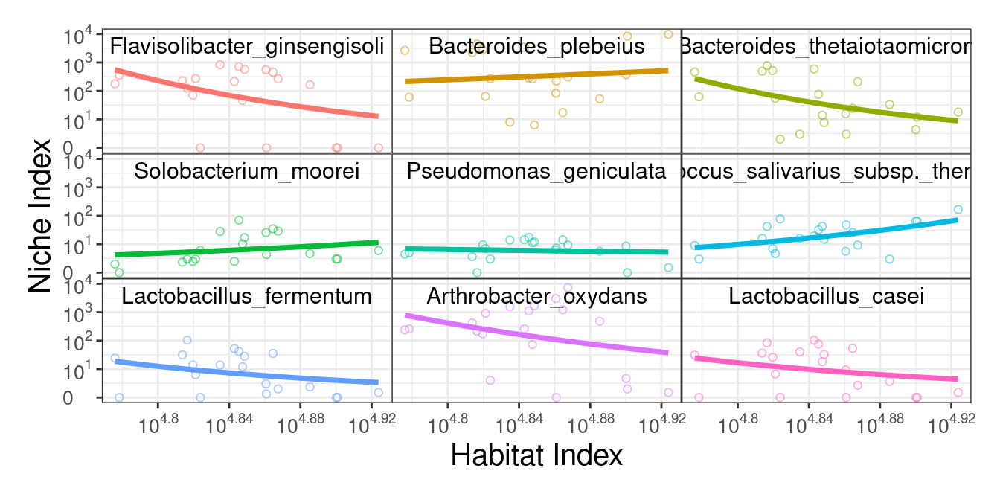
In this step we implement the power equation into functional clustering to detect different microbial modules. If after clustering there are still too many microbes within a certain module for network reconstruction, we can rerun functional clustering to further classify this module into distinct submodules.
we fit mean vector of each cluster center by power equation(assume k=3)
matplot(t(power_equation(x = 1:30, matrix(c(2,1,3,0.2,0.5,-0.5),nrow = 3, ncol = 2))),
type = "l",
xlab = "time",
ylab = "population")
legend("topright",
c("cluster 1", "cluster 2", "cluster 3"),
lty = c(1,2,3),
col = c(1,2,3),
box.lwd = 0)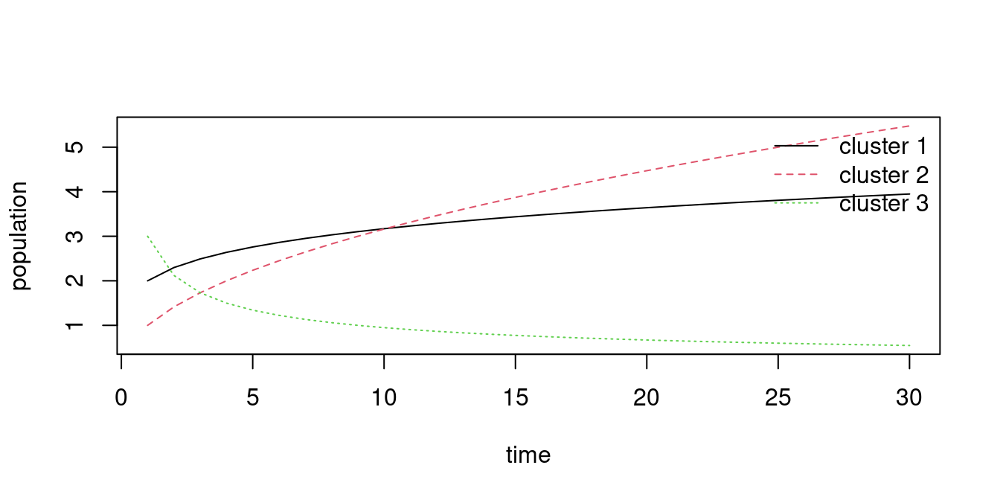
we fit covariance matrix of multivariate normal distribution with SAD1, it can be showed as
get_SAD1_covmatrix(c(2,0.5), n = 5)
#> [,1] [,2] [,3] [,4] [,5]
#> [1,] 0.25 0.50 1.00 2.00 4.00
#> [2,] 0.50 1.25 2.50 5.00 10.00
#> [3,] 1.00 2.50 5.25 10.50 21.00
#> [4,] 2.00 5.00 10.50 21.25 42.50
#> [5,] 4.00 10.00 21.00 42.50 85.25we can check initial parameters (k=4)
get_par_int(X = log10(df+1), k = 4, times = as.numeric(log10(colSums(df)+1)))
#> Error in nls(y ~ a * x^b, start = list(a = a, b = b), control = nls.control(maxiter = 1000, :
#> number of iterations exceeded maximum of 1000
#> Error in nls(y ~ a * x^b, start = list(a = a, b = b), control = nls.control(maxiter = 1000, :
#> number of iterations exceeded maximum of 1000
#> Error in nls(y ~ a * x^b, start = list(a = a, b = b), control = nls.control(maxiter = 1000, :
#> number of iterations exceeded maximum of 1000
#> Error in nls(y ~ a * x^b, start = list(a = a, b = b), control = nls.control(maxiter = 1000, :
#> number of iterations exceeded maximum of 1000
#> Error in nls(y ~ a * x^b, start = list(a = a, b = b), control = nls.control(maxiter = 1000, :
#> number of iterations exceeded maximum of 1000
#> Error in nls(y ~ a * x^b, start = list(a = a, b = b), control = nls.control(maxiter = 1000, :
#> number of iterations exceeded maximum of 1000
#> Error in nls(y ~ a * x^b, start = list(a = a, b = b), control = nls.control(maxiter = 1000, :
#> number of iterations exceeded maximum of 1000
#> Error in nls(y ~ a * x^b, start = list(a = a, b = b), control = nls.control(maxiter = 1000, :
#> number of iterations exceeded maximum of 1000
#> Error in nls(y ~ a * x^b, start = list(a = a, b = b), control = nls.control(maxiter = 1000, :
#> number of iterations exceeded maximum of 1000
#> Error in nls(y ~ a * x^b, start = list(a = a, b = b), control = nls.control(maxiter = 1000, :
#> number of iterations exceeded maximum of 1000
#> Error in nls(y ~ a * x^b, start = list(a = a, b = b), control = nls.control(maxiter = 1000, :
#> number of iterations exceeded maximum of 1000
#> Error in nls(y ~ a * x^b, start = list(a = a, b = b), control = nls.control(maxiter = 1000, :
#> number of iterations exceeded maximum of 1000
#> Error in nls(y ~ a * x^b, start = list(a = a, b = b), control = nls.control(maxiter = 1000, :
#> number of iterations exceeded maximum of 1000
#> $initial_cov_params
#> [1] 0.50000 1.09618
#>
#> $initial_mu_params
#> a b
#> [1,] 1.931686e+02 -3.605039
#> [2,] 1.275774e+01 -0.846207
#> [3,] 1.222847e+15 -21.729886
#> [4,] 2.241232e-35 50.461791
#>
#> $initial_probibality
#>
#> 1 2 3 4
#> 0.40983607 0.06557377 0.24590164 0.27868852
#use kmeans to get initial centers
tmp = kmeans(log10(df+1),4)$centers
tmp2 = power_equation_fit(tmp, trans = NULL)
power_equation_plot(tmp2, label = NULL,n = 4)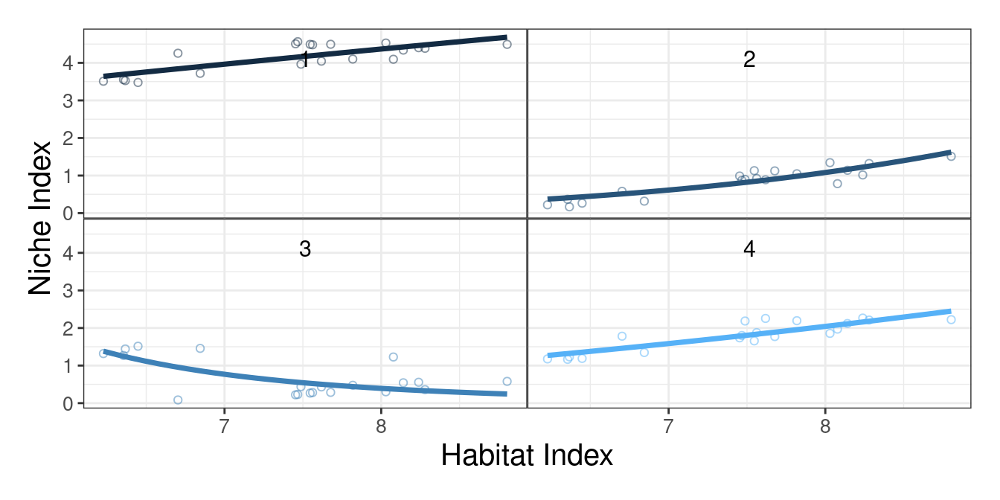
idopNetowrk already wrapped the mean curve modelling, covariance
matrix modelling and likelihood ratio calculation into a function
fun_clu().
options(max.print = 10)
fun_clu(result1$original_data, k = 3, iter.max = 5)
#> initial value 1225.809065
#> iter 10 value 1131.211546
#> final value 1125.868176
#> converged
#>
#> iter = 1
#> Log-Likelihood = 1125.868
#> initial value 1118.632965
#> iter 10 value 1115.215891
#> iter 10 value 1115.215890
#> iter 10 value 1115.215890
#> final value 1115.215890
#> converged
#>
#> iter = 2
#> Log-Likelihood = 1115.216
#> initial value 1113.154367
#> final value 1112.161558
#> converged
#>
#> iter = 3
#> Log-Likelihood = 1112.162
#> initial value 1111.441750
#> final value 1111.183148
#> converged
#>
#> iter = 4
#> Log-Likelihood = 1111.183
#> initial value 1110.923647
#> final value 1110.833941
#> converged
#>
#> iter = 5
#> Log-Likelihood = 1110.834
#> initial value 1110.730971
#> final value 1110.694694
#> converged
#>
#> iter = 6
#> Log-Likelihood = 1110.695
#> $cluster_number
#> [1] 3
#>
#> $Log_likelihodd
#> [1] 1110.695
#>
#> $AIC
#> [1] 2241.389
#>
#> $BIC
#> [1] 2260.101
#>
#> $cov_par
#> [1] 0.3550812 0.7415482
#>
#> $mu_par
#> [,1] [,2]
#> [1,] 1.596004e+13 -19.044518
#> [2,] 4.141364e-26 36.858052
#> [3,] 4.803220e+01 -1.683868
#>
#> $probibality
#> [1] 0.46813276 0.44877713 0.08309011
#>
#> $omega
#> [,1] [,2] [,3]
#> [1,] 9.998988e-01 1.011941e-04 3.154831e-10
#> [2,] 9.978411e-01 2.158853e-03 1.159336e-10
#> [3,] 9.398933e-01 6.010668e-02 9.560260e-18
#> [ reached getOption("max.print") -- omitted 45 rows ]
#>
#> $cluster
#> MC_UC3 MC_UC4 YZJC_UC3 GQ_UC3 ZC_UC3 MC_UC2 GQ_UC1 GQ_UC4 HJC_UC3 ZC_UC4
#> HJC_UC1 HJC_UC4 HC_UC2 ZC_UC1 HC_UC4 JJC_UC2 HJC_UC2 MC_UC1 GQ_UC5 ZC_UC5
#> apply(omega, 1, which.max)
#> [ reached 'max' / getOption("max.print") -- omitted 48 rows ]
#>
#> $cluster2
#> MC_UC3 MC_UC4 YZJC_UC3 GQ_UC3 ZC_UC3 MC_UC2 GQ_UC1 GQ_UC4 HJC_UC3 ZC_UC4
#> HJC_UC1 HJC_UC4 HC_UC2 ZC_UC1 HC_UC4 JJC_UC2 HJC_UC2 MC_UC1 GQ_UC5 ZC_UC5
#> apply(omega, 1, which.max)
#> [ reached 'max' / getOption("max.print") -- omitted 48 rows ]
#>
#> [ reached getOption("max.print") -- omitted 2 entries ]Usually we use multithread to calcuation k = 2-n and then to decide
best k , fun_clu_BIC uses BIC to select best cluster number
by default.
result2 = fun_clu_parallel(result1$original_data, start = 2, end = 5)
best.k = which.min(sapply( result2 , "[[" , 'BIC' )) + 1 #skipped k = 1
best.k
#> [1] 7
fun_clu_BIC(result = result2)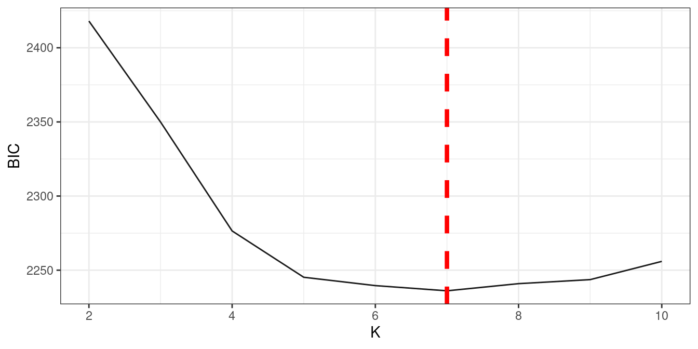
#we can direct give other k value
fun_clu_plot(result = result2, best.k = best.k)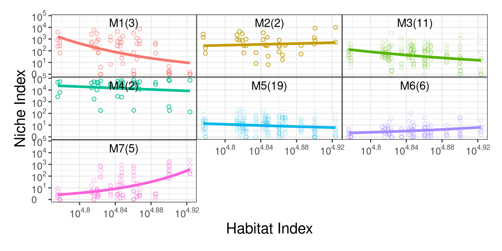
In this part we select part of mustard data for demonstration purpose.
data("mustard_microbe")
df2 = data_cleaning(mustard_microbe, x = 160)res_l = power_equation_fit(df2[,1:5]
res_r = power_equation_fit(df2[,89:95])
res1 = data_match(result1 = res_l, result2 = res_r)
res2 = bifun_clu_parallel(data1 = res1$dataset1$original_data,
data2 = res1$dataset2$original_data,
Time1 = res1$dataset1$Time,
Time2 = res1$dataset2$Time,
start = 2,
end = 10,
thread = 9,
iter.max = 10)
res2 = bifun_clu_parallel(data1 = res1$dataset1$original_data,
data2 = res1$dataset2$original_data,
Time1 = res1$dataset1$Time,
Time2 = res1$dataset2$Time,
start = 2,
end = 10,
thread = 9,
iter.max = 10)
fun_clu_BIC(result = res2)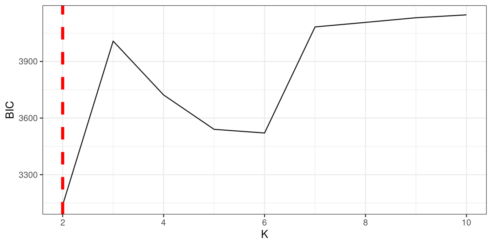
#we can set best.k directly
bifun_clu_plot(result = res2, best.k = 3, color1 = "#C060A1", color2 = "#59C1BD")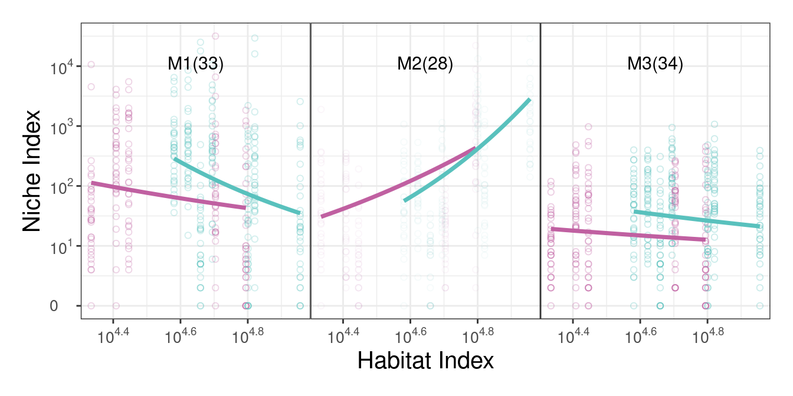
Sometimes a module is still too large for network reconstruction, which is determined by Dunbar’s number, we can further cluster it into sub-modules.
res3 = bifun_clu_convert(res2, best.k = 3)
large.module = order(sapply(res3$a$Module.all,nrow))[5]
res_suba = fun_clu_select(result_fit = res1$dataset1, result_funclu = res3$a, i = large.module)
res_subb = fun_clu_select(result_fit = res1$dataset2, result_funclu = res3$b, i = large.module)
dfsuba_l = power_equation_fit(res_suba$original_data)
dfsubb_r = power_equation_fit(res_subb$original_data)
ressub1 = data_match(result1 = dfsuba_l, result2 = dfsubb_r)
ressub2 = bifun_clu_parallel(data1 = ressub1$dataset1$original_data,
data2 = ressub1$dataset2$original_data,
Time1 = ressub1$dataset1$Time,
Time2 = ressub1$dataset2$Time,
start = 2,
end = 5,
iter.max = 3)
ressub2 = test_result$d2_subcluster
fun_clu_BIC(result = ressub2)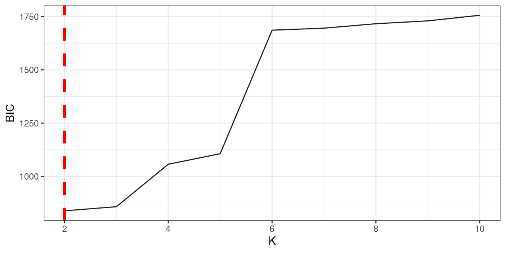
bifun_clu_plot(result = ressub2, best.k = 2, color1 = "#C060A1", color2 = "#59C1BD", degree = 1)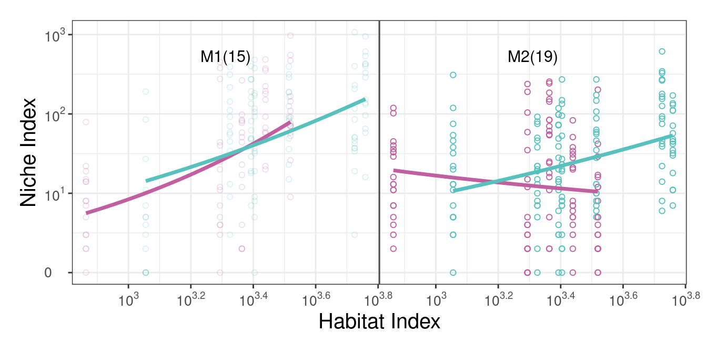
idopNetwork implements a LASSO-based procedure to choose a small set
of the most significant microbes/module that links with a given
microbes/modules. get_interaction()return a compound list
contain the target microbe/module name, the most relevant
Modules/microbes names and the coefficients.
result3 = fun_clu_convert(result2,best.k = best.k)
df.module = result3$original_data
get_interaction(df.module,1)
#> $ind.name
#> [1] "M1"
#>
#> $dep.name
#> [1] "M5"
#>
#> $coefficient
#> [1] 5.982483
#we can the microbial relationship in Module1
df.M1 = result3$Module.all$`1`
get_interaction(df.M1,1)
#> Warning: Option grouped=FALSE enforced in cv.glmnet, since < 3 observations per
#> fold
#> Warning: Option grouped=FALSE enforced in cv.glmnet, since < 3 observations per
#> fold
#> Warning: Option grouped=FALSE enforced in cv.glmnet, since < 3 observations per
#> fold
#> $ind.name
#> [1] "Arthrobacter_oxydans"
#>
#> $dep.name
#> [1] "Fusobacterium_necrophorum"
#>
#> $coefficient
#> [1] 0.08263525qdODE system is build based on variable selection results, it has unique ability to decompose the observed module/microbe abundance level into its independent component and dependent component, which can be used for inferring idopNetwork.
options(max.print = 10)
# first we test solving a qdODE
module.relationship = lapply(1:best.k, function(c)get_interaction(df.module,c))
ode.test = qdODE_all(result = result3, relationship = module.relationship, 1, maxit = 100)
#> iter 10 value 0.004221
#> final value 0.000002
#> converged
# we can view the result
qdODE_plot_base(ode.test)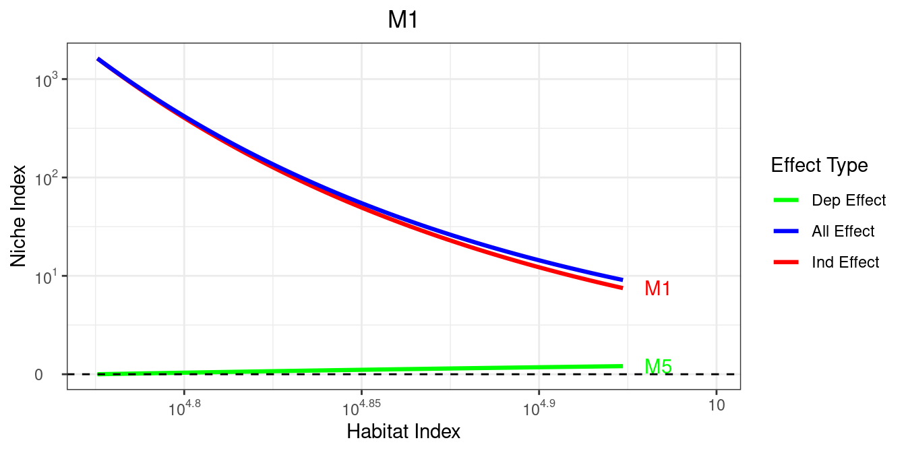
# then we solve all qdODEs
ode.module = qdODE_parallel(result3)
qdODE_plot_all(ode.module)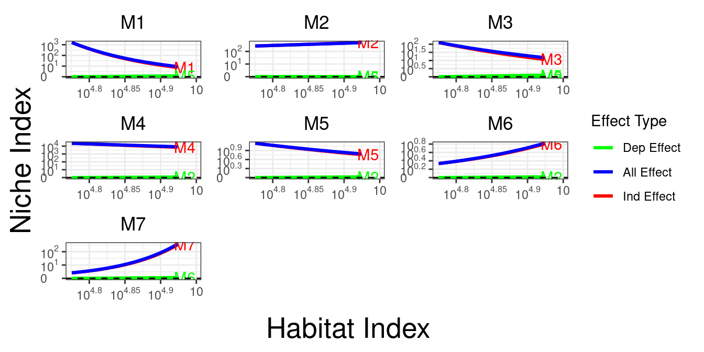
result_m1 = fun_clu_select(result_fit = result1, result_funclu = result3, i = 1)
ode.M1 = qdODE_parallel(result_m1)
qdODE_plot_all(ode.M1)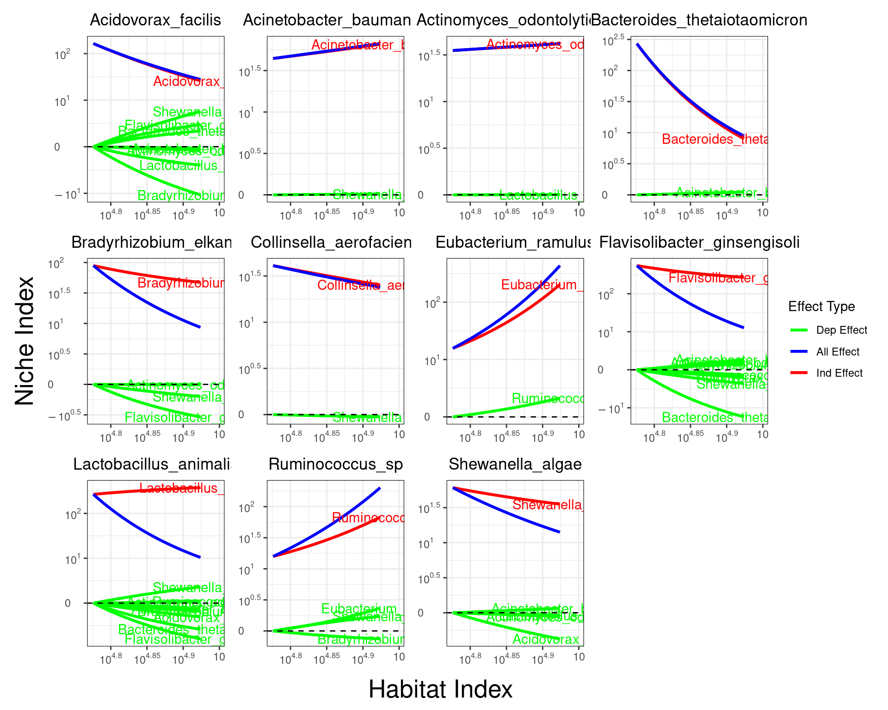
The final step of this guide is to visualization the multilayer network, and our package provide network_plot function to easily draw our idopNetwork. We can simply plug previous qdODE results into network_conversion function, and it will convert qdODE result for network visualization
net_module = lapply(ode.module$ode_result, network_conversion)
network_plot(net_module, title = "Module Network")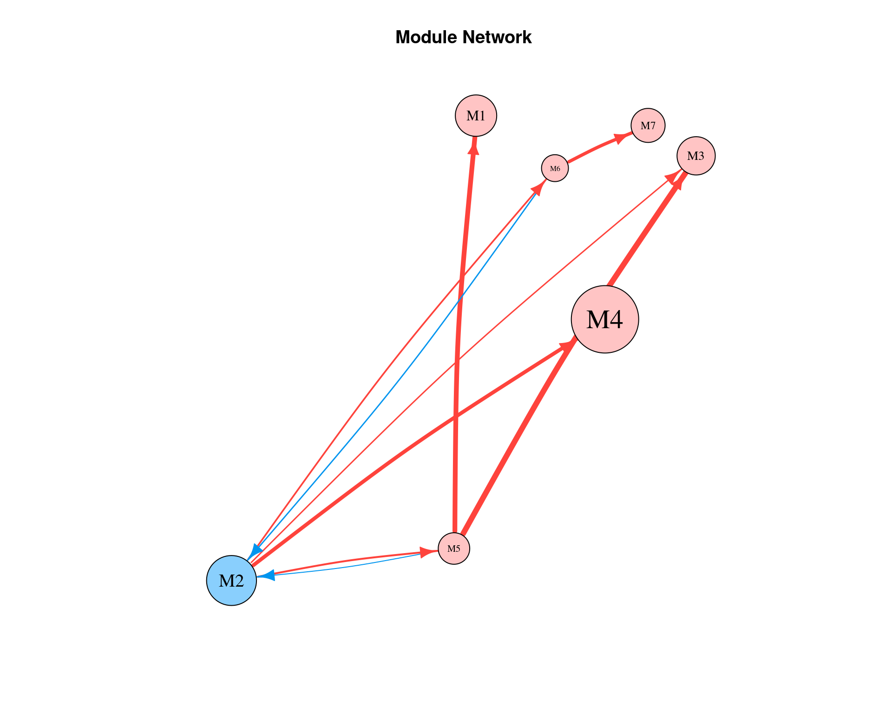
net_m1 = lapply(ode.M1$ode_result, network_conversion)
network_plot(net_m1, title = "M1 Network")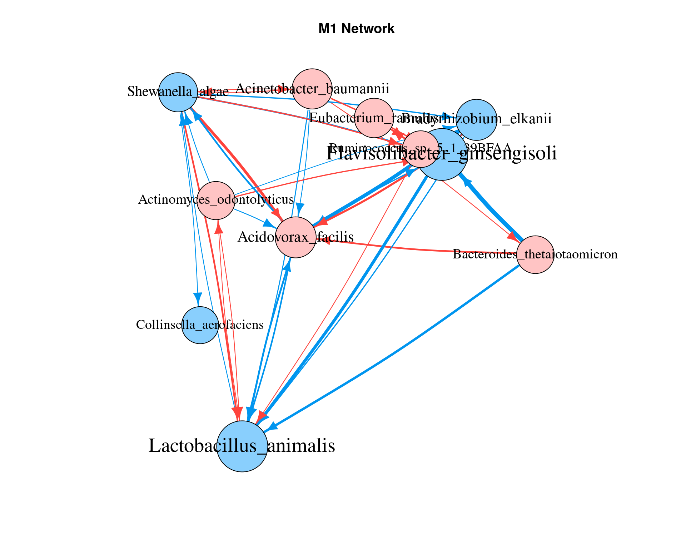
mustard_module_a = qdODE_parallel(res3$a)
mustard_module_b = qdODE_parallel(res3$b)
res_m1a = fun_clu_select(result_fit = res1$dataset1, result_funclu = res3$a, i = 3)
res_m1b = fun_clu_select(result_fit = res1$dataset2, result_funclu = res3$b, i = 3)
mustard_M1a = qdODE_parallel(res_m1a)
mustard_M1b = qdODE_parallel(res_m1b)
mustard_m_a <- lapply(mustard_module_a$ode_result, network_conversion)
mustard_m_b <- lapply(mustard_module_b$ode_result, network_conversion)
#set seed to make same random layout
layout(matrix(c(1,2),1,2,byrow=TRUE))
set.seed(1)
network_plot(mustard_m_a, title = "Module Network a")
set.seed(1)
network_plot(mustard_m_b, title = "Module Network b")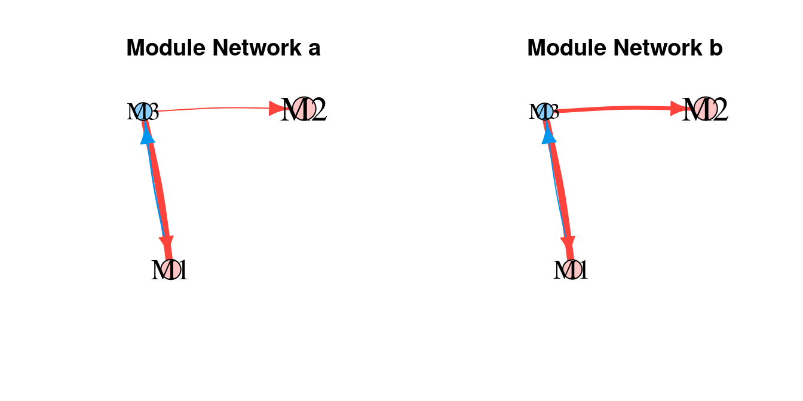
result_m1a = fun_clu_select(result_fit = res1$dataset1, result_funclu = res3$a, i = 1)
result_m1b = fun_clu_select(result_fit = res1$dataset2, result_funclu = res3$b, i = 1)
ode.m1a = qdODE_parallel(result_m1a, thread = 16)
ode.m1b = qdODE_parallel(result_m1b, thread = 16)
net_m1a = lapply(ode.m1a$ode_result, network_conversion)
net_m1b = lapply(ode.m1b$ode_result, network_conversion)
#set seed to make same random layout
layout(matrix(c(1,2),1,2,byrow=TRUE))
set.seed(1)
network_plot(net_m1a, title = "Module1 a")
set.seed(1)
network_plot(net_m1b, title = "Module1 b")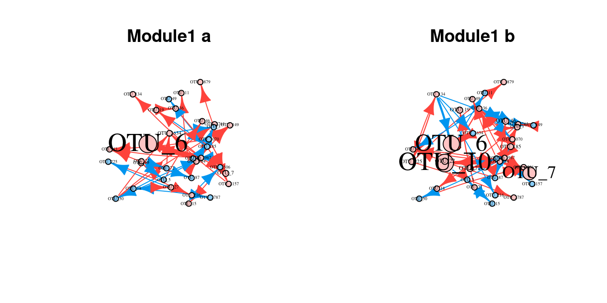
object “LL.next” not found
This happens when parameters optimization failure, try rerun
cluster.
plot failure when using fun_clu_plot() or
bifun_clu_plot()
This often happens when bad initial parameters is given and some cluster
is lost, try rerun cluster or use a smaller k.
sessionInfo()
#> R version 4.2.2 (2022-10-31)
#> Platform: x86_64-pc-linux-gnu (64-bit)
#> Running under: Ubuntu 22.04.1 LTS
#>
#> Matrix products: default
#> BLAS: /usr/lib/x86_64-linux-gnu/openblas-pthread/libblas.so.3
#> LAPACK: /usr/lib/x86_64-linux-gnu/openblas-pthread/libopenblasp-r0.3.20.so
#>
#> locale:
#> [1] LC_CTYPE=C.UTF-8 LC_NUMERIC=C LC_TIME=C.UTF-8
#> [4] LC_COLLATE=C.UTF-8 LC_MONETARY=C.UTF-8 LC_MESSAGES=C.UTF-8
#> [7] LC_PAPER=C.UTF-8 LC_NAME=C LC_ADDRESS=C
#> [10] LC_TELEPHONE=C LC_MEASUREMENT=C.UTF-8 LC_IDENTIFICATION=C
#>
#> attached base packages:
#> [1] stats graphics grDevices utils datasets methods base
#>
#> other attached packages:
#> [1] idopNetwork_0.1.1
#>
#> loaded via a namespace (and not attached):
#> [1] deSolve_1.34 shape_1.4.6 xfun_0.35
#> [4] bslib_0.4.1 reshape2_1.4.4 purrr_0.3.5
#> [7] splines_4.2.2 lattice_0.20-45 colorspace_2.0-3
#> [10] vctrs_0.5.1 htmltools_0.5.3 yaml_2.3.6
#> [13] utf8_1.2.2 survival_3.4-0 rlang_1.0.6
#> [16] orthopolynom_1.0-6.1 pkgdown_2.0.6 jquerylib_0.1.4
#> [19] pillar_1.8.1 withr_2.5.0 glue_1.6.2
#> [22] plyr_1.8.8 foreach_1.5.2 lifecycle_1.0.3
#> [25] stringr_1.4.1 munsell_0.5.0 gtable_0.3.1
#> [28] ragg_1.2.4 mvtnorm_1.1-3 codetools_0.2-18
#> [31] memoise_2.0.1 evaluate_0.18 labeling_0.4.2
#> [34] knitr_1.41 fastmap_1.1.0 parallel_4.2.2
#> [37] fansi_1.0.3 highr_0.9 Rcpp_1.0.9
#> [40] polynom_1.4-1 scales_1.2.1 cachem_1.0.6
#> [43] desc_1.4.2 jsonlite_1.8.3 farver_2.1.1
#> [46] systemfonts_1.0.4 fs_1.5.2 textshaping_0.3.6
#> [49] ggplot2_3.4.0 digest_0.6.30 stringi_1.7.8
#> [52] grid_4.2.2 rprojroot_2.0.3 cli_3.4.1
#> [55] tools_4.2.2 magrittr_2.0.3 sass_0.4.3
#> [58] glmnet_4.1-4 patchwork_1.1.2 tibble_3.1.8
#> [61] pkgconfig_2.0.3 Matrix_1.5-1 rmarkdown_2.18
#> [64] iterators_1.0.14 R6_2.5.1 igraph_1.3.5
#> [67] compiler_4.2.2